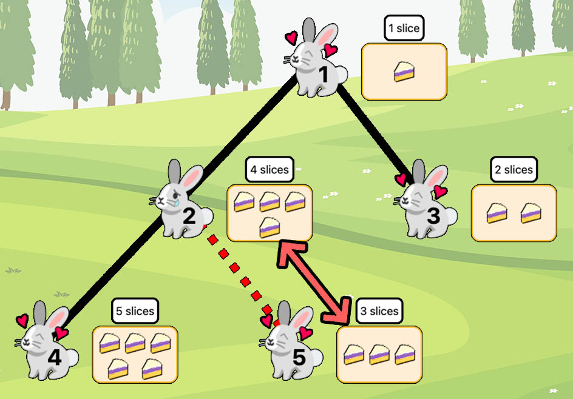
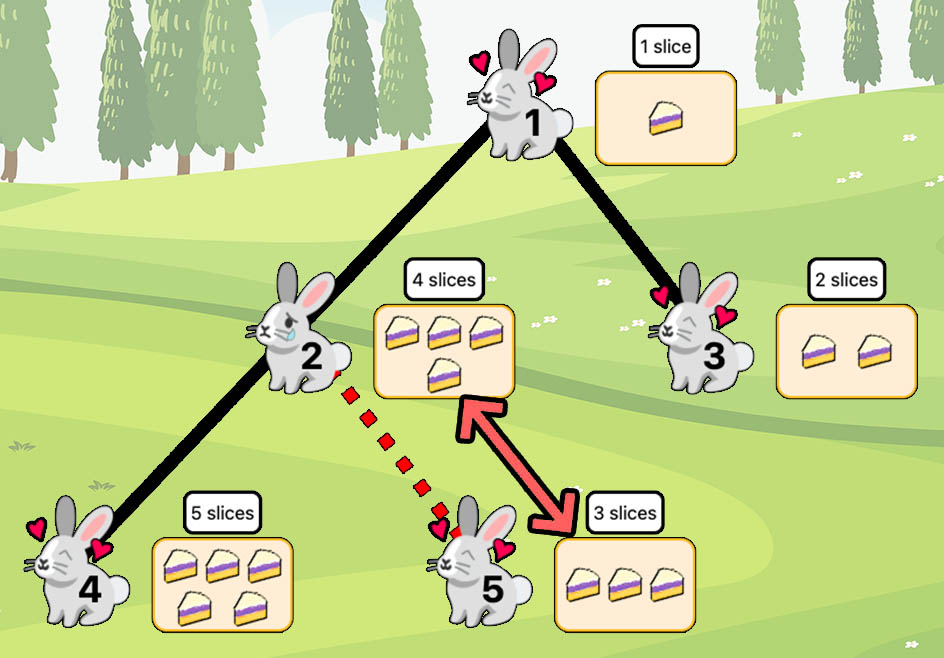

When visiting Taman Safari Bogor, Pak Dengklek finds $N$ immortal bunnies from an alien planet that are indexed from $1$ to $N$ from oldest to youngest. Uniquely, this bunny species reproduces without a partner, so each of these bunnies only has a single parent. To be specific, for each $2 \leq i \leq N$, bunny $i$ is the child of bunny $P_i$, where $1 \leq P_i \leq i - 1$.
Pak Dengklek plans to give away Bogor's local food, the lapis talas cake, as gifts for the bunnies. Pak Dengklek has prepared $N$ boxes, numbered from $1$ to $N$. The $j$-th box contains exactly $j$ slices of lapis talas. Initially, Pak Dengklek distributes the $N$ boxes such that each bunny receives one box.
Pak Dengklek knows that this bunny species is smart, enjoys sharing, and truly loves its descendants. A bunny is considered sad if and only if at least one of its children receives a box containing fewer slices of lapis talas.
Each second, if there is at least one sad bunny, then among the sad bunnies, the youngest bunny (the bunny with the biggest index) will swap its box with the box of its child that contains the fewest slices of lapis talas. This swapping process is done repeatedly until there are no sad bunnies.
Of course you are curious, is it possible for Pak Dengklek to distribute the $N$ boxes such that there will be exactly $K$ swaps?
Given an integer $Q$. If $Q = 0$, you only need to report whether it is possible to satisfy the problem condition. If $Q = 1$, you must also report one possible way of distributing the boxes.
The input is given with the following format:
N K Q P2 P3 … PN
If there is no way to distribute the boxes that satisfies, output a single line containing TIDAK (means no).
If there is a way that satisfies, then output a line containing YA (means yes).
If $Q = 1$, output another line containing a permutation of $[1, 2, \ldots, N]$ which represents a way to distribute the boxes that satisfies, where the $i$-th number in the permutation repesents the number of lapis talas slices in the box initially distributed to the $i$-th bunny.
If there are more than one permutations that satisfy, you can output any of them.
5 3 1 1 1 2 2
YA 4 5 2 1 3
The following is an illustration for the ancestry structure of the $N$ bunnies.
If Pak Dengklek distributes the boxes such that the number of lapis talas slices in the box of each bunny is $[4, 5, 2, 1, 3]$, then the following events will happen:

In total, there are exactly $3$ swaps.
5 3 0 1 1 2 2
YA
This sample is similar to the first sample, so there is a way to distribute the boxes that satisfies. However, since $Q = 0$ here, you do not have to output the permutation.
8 265 1 1 2 1 3 4 2 1
TIDAK
There is no way to distribute the boxes that satisfies.